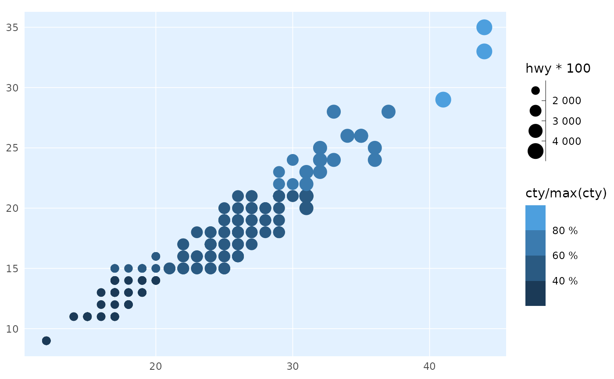

`label_percent_cz()` returns a formatter that outputs percent labels with a " `label_number_cz()` uses space as thousand separator and decimal comma. Use these when you need to format labels on something other than X and Y axes
label_percent_cz( accuracy = NULL, scale = 100, prefix = "", suffix = " %", big.mark = " ", decimal.mark = ",", trim = TRUE, ... ) label_number_cz( accuracy = NULL, scale = 1, prefix = "", suffix = "", big.mark = " ", decimal.mark = ",", trim = TRUE, ... )
| accuracy | A number to round to. Use (e.g.) Applied to rescaled data. |
|---|---|
| scale | A scaling factor: |
| prefix | Symbols to display before and after value. |
| suffix | Symbols to display before and after value. |
| big.mark | Character used between every 3 digits to separate thousands. |
| decimal.mark | The character to be used to indicate the numeric decimal point. |
| trim | Logical, if |
| ... | Other arguments passed on to |
library(ptrr) library(ggplot2) ggplot(mpg, aes(hwy, cty)) + geom_point(aes(colour = cty/max(cty), size = hwy*100)) + theme_ptrr(family = "sans", title_family = "sans", gridlines = "scatter") + scale_color_binned(labels = label_percent_cz()) + scale_size_binned(labels = label_number_cz())